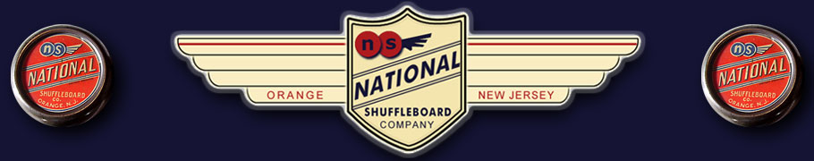

Shuffleboard How To Play
There are a number of ways to learn how to play on a shuffleboard
table but all players should strive for the three main objectives.
Every time you play shuffleboard practice the following:
1) THE WELL PLACED PUCK
This is of the most important skills to develop! Learn how to place
your puck as far down the board as possible, without having it fall off
the far end. This skill is best attained with frequent practice.
2) ATTACK OPPONENTS PUCKS
As you learn how to play shuffleboard try to bump and knock off your
opponent's highest scoring pucks to prevent them from scoring. This skill
is also best attained with frequent practice.
3) BLOCKING OR PROTECTING YOUR OWN PUCKS
The method of doing this is called blocking or screening a puck, a
familiar tactic seen in football and basketball. Simply place as many of
your pucks in front of your highest scoring puck so that your opponent will
not be able to knock you off or score. Never place a blocking puck too
close to your scoring pucks, because a good opponent will be able to bump
them all off the board.
LEARN HOW TO PLAY SHUFFLEBOARD USING BOTH HANDS
Shuffleboard requires equal ability with both hands. With a lot of practice
you too can learn how to play shuffleboard with equal skill with either hand.
Practice by trying to shoot an equal number of shots with either hand. Learning
to do this will greatly improve your chances of winning.
HOW TO SHOOT THE PUCKS (OR WEIGHTS) ON A SHUFFLE BOARD
When you first learn how to play shuffleboard you may find it easier to shoot
your pucks from the center of the board. However most players will learn it is
more accurate to shoot from the edge or side of the board. This way you can use
your thumb, index and middle fingers to grip the puck, while you use the third
and fourth finger to slide along the edge of the shuffleboard surface. This way
the edge of the board will act as a guide to assist in balance and control. You
will find that this will give you a much greater degree of accuracy in placing
your pucks on the shuffleboard table.
HOW TO PLAY SHUFFLEBOARD USING "ENGLISH" OR (TWIST) IN SHUFFLEBOARD PLAY
The use of English (also known as twist or sidespin) on a puck being delivered on a
shuffleboard table greatly improves the accuracy. Similar to its use in billiards, using
English gives you more control over the puck's placement and how it will react after it
hits another puck. To put English on a shot simply twist your thumb and forefinger away
from the wrist and in toward the body as you release the puck. As with most skills, acquiring
and developing this one will take a lot of practice. But when properly used, it greatly
improves a puck's chances of remaining on the board after it makes contact with an opponent's
puck. The English acts as a brake, holding it in place. Very high skilled players use English
to hide delivered pucks behind pucks already on the board, thus gaining the advantage of having
a just-delivered puck well blocked without further play.